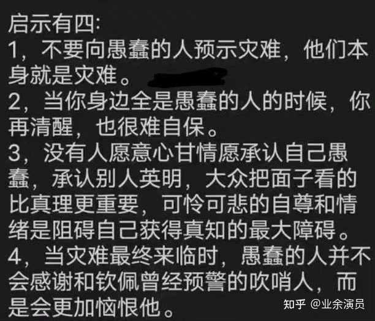

易富贤教授早在零几年在天涯论坛强烈反对一胎政策的时候，被太多学者和群众辱骂，当时童年时期的我看着他们那一长串又一长串的争论，却插不进去话
如今时间却证明了他的正确，吹哨人冻毙于风雪，但是灾难来临时，人们从不会感谢吹哨人

The Guardian published an interview with me regarding the "Childless 100 Days Campaign" once implemented in Shandong Province, China. 英国《卫报》就中国山东省曾推行“百日无孩日”运动发表对我的采访。https://t.co/ewiWoRGsiJ